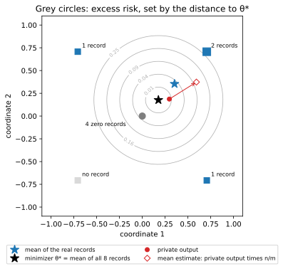
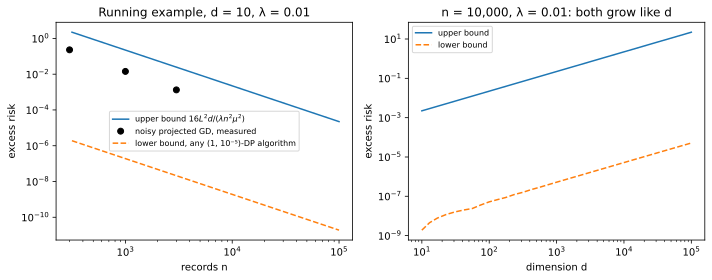
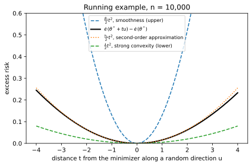
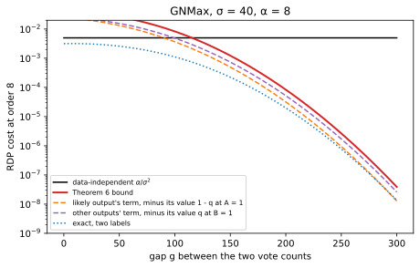
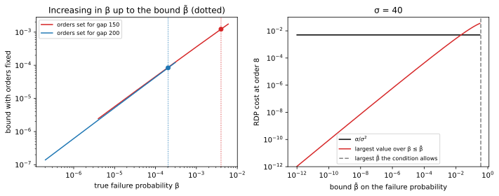
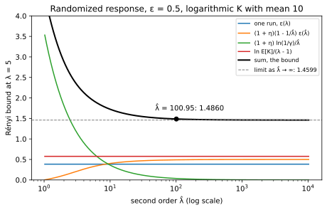
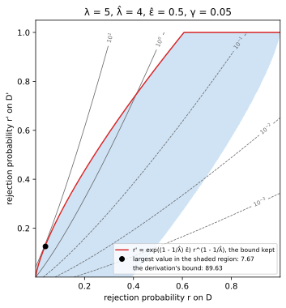
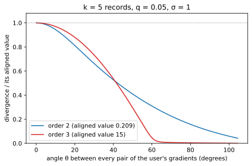
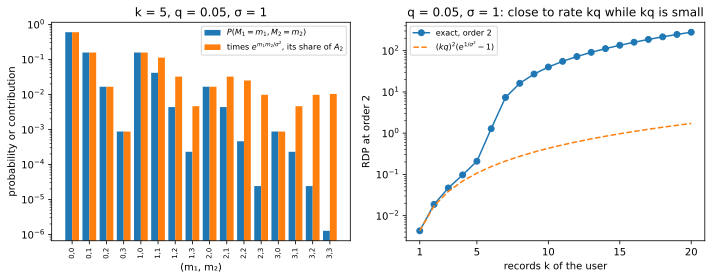
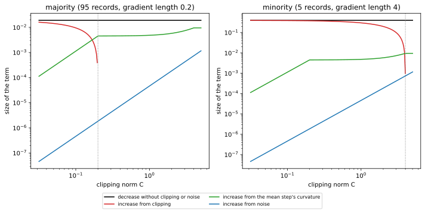

Appendix M — Private learning and tuning
This appendix derives five results about learning under differential privacy (DP) that the chapters on private machine learning cite, sketch or check only numerically. Each takes a guarantee for a small building block, one noisy gradient step, one noisy vote, one training run, one record of a user or one step’s noise, and follows it through a learning procedure. Table M.1 lists them.
| Derivation | Where the chapter states or uses it |
|---|---|
| The best excess risk of private convex empirical risk minimization, from above and below, and exact bounds for output and objective perturbation | Section 38.5, Section 38.4, Section 38.1 and Section 38.2 |
| The data-dependent Rényi bound for a noisy vote of teachers | Section 42.5 |
| The Rényi bound for the best of a random number of training runs | Section 40.4 |
| The worst case for a user with \(k\) records in private gradient descent with record-level sampling | Section 44.2 |
| How one step of private gradient descent changes the loss of one group | Section 45.3 |
The page keeps one notation throughout, even where a source paper uses other letters. The model’s parameters are \(\theta\), the Rényi order is always \(\alpha\), the learning rate is \(\eta\) and the sampling rate is \(q\). The letter \(\lambda\) is a ridge coefficient in the first section and a curvature in the last, and \(\mu\) is a ratio of sensitivity to noise.
M.1 The optimal rates of private convex learning
M.1.1 What the chapter uses
Private empirical risk minimization trains a model by empirical risk minimization (ERM). For a dataset \(D\) of \(n\) records it minimizes \[\mathcal L(\theta; D) = \frac1n\sum_{i=1}^n\ell(\theta; z_i) + \frac\lambda2\|\theta\|^2, \tag{M.1}\] where \(\theta\) is the vector of model parameters in \(d\) dimensions, \(z_i\) is the \(i\)-th record, the loss \(\ell\) is convex with gradients of length at most \(L\), and \(\lambda\) is the ridge coefficient. Write \(\mathcal L(\theta)\) when the dataset is fixed and \(\theta^*\) for the minimizer. A private algorithm releases \(\tilde\theta\), and its excess risk is \(\mathcal L(\tilde\theta) - \mathcal L(\theta^*)\). Neighbouring datasets differ by replacing one record. The chapter cites Bassily, Smith & Thakurta (2014) for the best rate (Theorem 38.5), of order \(L^2d/(\lambda n^2\varepsilon^2)\) up to logarithms (Equation 38.27), and of order \(RL\sqrt d/(n\varepsilon)\) without a ridge, with weights in a ball of radius \(R\) (Section 38.4). It gives the excess risk of output and objective perturbation, Equation 38.6 and Equation 38.16, only to second order in the noise. This section proves three results.
First, write \(\mu(\varepsilon, \delta)\) for the largest ratio of sensitivity to noise at which one Gaussian release is \((\varepsilon, \delta)\)-DP (Equation 38.2). Run noisy projected gradient descent from \(\theta_1 = 0\) in the ball of radius \(R = L/\lambda\), for \(T\) steps with learning rates \(\eta_t = 2/(\lambda(t + 1))\) and Gaussian noise of standard deviation \(\sigma = (2L/n)\sqrt T/\mu(\varepsilon, \delta)\) per coordinate on each gradient, and release the average \(\tilde\theta\) of the iterates with weights proportional to \(t\). If \(T \ge n^2\mu^2/d\), then \[\mathbb E\big[\mathcal L(\tilde\theta)\big] - \mathcal L(\theta^*) \le \frac{16L^2d}{\lambda n^2\mu(\varepsilon, \delta)^2} \le \frac{32L^2d\ln(1.25/\delta)}{\lambda n^2\varepsilon^2}, \tag{M.2}\] where the second form holds for \(\varepsilon < 1\).
Second, let \(K\) be the number that the fingerprinting bound of Lower bounds uses to count the records a private mean needs, \[K = \frac{\sqrt d}{(e^\varepsilon - 1) + 4\delta\sqrt d}. \tag{M.3}\] For every \((\varepsilon, \delta)\)-DP algorithm there is a dataset of \(n\) records, with linear losses whose gradients have length at most \(L\), on which \[\mathbb E\big[\mathcal L(\tilde\theta)\big] - \mathcal L(\theta^*) \ge \frac{L^2}{2\lambda}\max_{1 \le m \le n}\Big[\frac mn\Big(\frac13 - \frac{m}{2K}\Big)\Big]^2 \ge \frac{L^2K^2}{2592\,\lambda n^2}\quad\text{when } 3 \le K \le 3n. \tag{M.4}\] When \(4\delta\sqrt d \le e^\varepsilon - 1\), \(K\) is at least \(\sqrt d/(2(e^\varepsilon - 1))\), and for \(\varepsilon \le 1\), \(e^\varepsilon - 1\) is between \(\varepsilon\) and \(1.72\varepsilon\), so this is of the order of Equation 38.27. Without a ridge, over the ball of radius \(R\), every private algorithm has excess risk at least \[\max_{1\le m\le n}\frac{mLR}{16n}\Big(\frac23 - \frac mK\Big)^2 \ge \frac{LRK}{729\,n}\quad\text{when } \tfrac92 \le K \le \tfrac92n, \tag{M.5}\] which is of order \(RL\sqrt d/(n\varepsilon)\).
Third, write \(\beta_s\) for the largest curvature of \(\mathcal L\), for example \(\frac14 + \lambda\) for the chapter’s logistic regression with features of length at most 1. Output perturbation adds noise \(Z\) to \(\theta^*\), and objective perturbation adds \(\frac1n\langle b, \theta\rangle\) to the objective. Then \[\frac\lambda2\mathbb E\|Z\|^2 \le \mathbb E\big[\mathcal L(\theta^* + Z) - \mathcal L(\theta^*)\big] \le \frac{\beta_s}2\mathbb E\|Z\|^2, \qquad \frac{\lambda\,\mathbb E\|b\|^2}{2\beta_s^2n^2} \le \mathbb E\big[\mathcal L(\tilde\theta) - \mathcal L(\theta^*)\big] \le \frac{\mathbb E\|b\|^2}{2\lambda n^2}. \tag{M.6}\]
M.1.2 The idea
The lower bound turns a private trainer into a private mean estimator, which the fingerprinting argument says cannot be accurate with few records. With the loss \(-\langle \theta, x\rangle\) and the ridge, the excess risk of any \(\theta\) is \(\frac\lambda2\) times its squared distance from the mean of the records divided by \(\lambda\). Figure M.1 shows the rest in two dimensions. Four real records sit at corners of a square, and four zero records sit at the origin. The mean of all eight is half the mean of the four real ones, so multiplying the trainer’s output by \(n/m = 2\) estimates the real mean, with twice the trainer’s error. So a trainer’s error must be at least a constant times \(m/n\) when \(m\) is about \(K\), and squaring a distance of order \(K/n\) gives an excess risk of order \(K^2/n^2\).

M.1.3 Derivation
The upper bound. The plan is to treat privacy noise as one more source of gradient noise. Privacy adds \(d\sigma^2\) to the average squared length of the noisy gradient, and the convergence bound of stochastic gradient descent (SGD) divides that by \(T\), so the number of steps cancels from the noise term.
- Privacy. Each step releases the noisy gradient \(\nabla\mathcal L(\theta_t) + \xi_t\), where the noise \(\xi_t\) is fresh, normal, with mean zero and variance \(\sigma^2\) in each coordinate. Replacing one record changes the average of the loss gradients by at most \(2L/n\), because one gradient of length at most \(L\) leaves and another arrives, while the ridge term \(\lambda \theta_t\) is the same on both datasets. So each step is a Gaussian mechanism with ratio \(2L/(n\sigma)\). By the composition of Gaussian mechanisms (f-DP and Gaussian differential privacy), used in step 2 of the proof of Theorem 38.3, \(T\) adaptive Gaussian steps are exactly as private as one Gaussian release with ratio \(\sqrt T\cdot 2L/(n\sigma)\), and the choice of \(\sigma\) makes this \(\mu(\varepsilon, \delta)\). The projection and the average use only released values, so they are post-processing.
- The ball contains the minimizer. The gradient of \(\mathcal L\) is zero at \(\theta^*\), so \(\lambda \theta^* = -\frac1n\sum_i\nabla\ell(\theta^*; z_i)\). The right side is an average of vectors of length at most \(L\), so \(\|\theta^*\| \le L/\lambda = R\), and the minimizer over the ball is the overall minimizer.
- The noisy gradient’s second moment. On the ball, \(\|\nabla\mathcal L(\theta)\| \le L + \lambda\|\theta\| \le 2L\). The noise has mean zero and is independent of \(\theta_t\), so the cross term vanishes when the square is expanded: \[\mathbb E\|\nabla\mathcal L(\theta_t) + \xi_t\|^2 = \|\nabla\mathcal L(\theta_t)\|^2 + \mathbb E\|\xi_t\|^2 \le 4L^2 + d\sigma^2 = G^2. \tag{M.7}\]
- The bound for SGD on a strongly convex objective. Optimization proves Equation 6.32 for a function \(F\) that is \(\lambda\)-strongly convex on a closed convex set containing its minimizer, with random step directions that are right on average and have average squared length at most \(G^2\). Projected steps with learning rates \(2/(\lambda(t + 1))\) and the average weighted by \(t\) then satisfy \[\mathbb E[F(\tilde\theta_T)] - F^* \le \frac{2G^2}{\lambda(T + 1)}. \tag{M.8}\] The ridge makes \(\mathcal L\) \(\lambda\)-strongly convex, and step 2 puts the minimizer in the ball, so the bound applies to \(\mathcal L\).
- Substitute the noise. The calibration gives \(\sigma^2 = 4L^2T/(n^2\mu^2)\). So \[\frac{2G^2}{\lambda(T + 1)} = \frac{8L^2}{\lambda(T + 1)} + \frac{8L^2d}{\lambda n^2\mu^2}\cdot\frac{T}{T + 1} \le \frac{8L^2}{\lambda(T + 1)} + \frac{8L^2d}{\lambda n^2\mu^2}, \tag{M.9}\] and the noise term no longer depends on \(T\).
- Choose \(T\). When \(T \ge n^2\mu^2/d\), the first term is at most the second, so the sum is at most \(16L^2d/(\lambda n^2\mu^2)\). This is the first form of Equation M.2.
- In terms of \(\varepsilon\). For \(\varepsilon < 1\) the classic Gaussian calibration, which adds noise \(\Delta\sqrt{2\ln(1.25/\delta)}/\varepsilon\) to a function of sensitivity \(\Delta\), is \((\varepsilon, \delta)\)-DP. The exact calibration uses the least noise that works, so its ratio is at least the classic one, and \[\frac1{\mu^2} \le \frac{2\ln(1.25/\delta)}{\varepsilon^2}. \tag{M.10}\] Substituting this doubles the constant to 32.
The other schedule of that section, learning rates \(1/(\lambda t)\) with the uniform average, has the bound \(G^2(1 + \ln T)/(2\lambda T)\). The same substitution gives at most \(4L^2d(1 + \ln T)/(\lambda n^2\mu^2)\) for \(T \ge n^2\mu^2/d\). Since \(T\) grows like \(n^2\), the factor \(1 + \ln T\) grows like \(\ln n\), which is the logarithm the chapter mentions, and the weighted average removes it.
The strongly convex lower bound. The plan is to build a family of hard datasets and an estimator, and then to apply the fingerprinting bound.
- A loss whose excess risk is a distance. Take the linear loss \(\ell(\theta; x) = -\langle \theta, x\rangle\) on records with \(\|x\| \le L\), so every loss gradient, \(-x\), has length at most \(L\). With the ridge, completing the square gives \[\mathcal L(\theta) = \frac\lambda2\|\theta\|^2 - \langle \theta, \bar x\rangle = \frac\lambda2\Big\|\theta - \frac{\bar x}\lambda\Big\|^2 - \frac{\|\bar x\|^2}{2\lambda}, \tag{M.11}\] where \(\bar x\) is the mean of the records. So \(\theta^* = \bar x/\lambda\), and the excess risk of any \(\theta\) is exactly \(\frac\lambda2\|\theta - \theta^*\|^2\).
- Hard datasets. The fingerprinting bound uses random records \(y_i \in \{-1, +1\}^d\) with random attribute means, as in Section 27.3. Fix an integer \(m\) between 1 and \(n\). The dataset has \(m\) real records \(x_i = (L/\sqrt d)\,y_i\), each of length \(L\), and \(n - m\) records equal to zero. The zeros add nothing to the sum, so the mean of all \(n\) records is \(\bar x = (m/n)(L/\sqrt d)\,\bar y\), where \(\bar y\) is the mean of the \(y_i\).
- From a trainer to a mean estimator. Given the \(m\) records \(y_i\), build the dataset of step 2 and run the private trainer to get \(\tilde\theta\). The estimator \(M\) rescales \(\tilde\theta\) so that \(\theta^*\) maps to \(\bar y\), then clips each coordinate to \([-1, 1]\): \[M = \operatorname{clip}_{[-1, 1]^d}\Big(\frac{n\lambda\sqrt d}{mL}\,\tilde\theta\Big). \tag{M.12}\] Replacing one \(y_i\) replaces one record of the padded dataset, so \(M\) is \((\varepsilon, \delta)\)-DP by post-processing. Clipping never moves a coordinate away from \(\bar y\), because \(\bar y\) lies in \([-1, 1]^d\). And by the Cauchy–Schwarz inequality the \(\ell_1\) norm is at most \(\sqrt d\) times the Euclidean norm. So \[\|M - \bar y\|_1 \le \sqrt d\cdot\frac{n\lambda\sqrt d}{mL}\|\tilde\theta - \theta^*\| = \frac{dn\lambda}{mL}\|\tilde\theta - \theta^*\|. \tag{M.13}\]
- Average error. Write \(E\) for the trainer’s expected excess risk on these datasets. By step 1, \(\mathbb E\|\tilde\theta - \theta^*\|^2 = 2E/\lambda\), and the average of a length is at most the square root of the average squared length. So the average error per attribute, \(a = \mathbb E\|M - \bar y\|_1/d\), satisfies \[a \le \frac nm\cdot\frac{\sqrt{2\lambda E}}{L}. \tag{M.14}\]
- The fingerprinting bound. Equation 27.30 says that an \((\varepsilon, \delta)\)-DP estimator of \(d\) attribute means from \(m\) records, with outputs in \([-1, 1]^d\) and average error \(a\) per attribute, needs \[m \ge \Big(\frac23 - 2a\Big)K. \tag{M.15}\] Its proof plays two facts against each other: an accurate estimate must correlate with the records by a total of order \(d\), while DP lets each record carry only about \((e^\varepsilon - 1)\sqrt d + 4\delta d\) of that total. Rearranging gives \(a \ge \frac13 - \frac{m}{2K}\), and step 4 turns it into \[\frac{\sqrt{2\lambda E}}{L} \ge \frac mn\Big(\frac13 - \frac{m}{2K}\Big). \tag{M.16}\]
- Choose \(m\). This holds for every \(m\), so it holds for the best one. When the right side is negative it says nothing, so only values of \(m\) below \(2K/3\) matter, where both sides are non-negative. Squaring and multiplying by \(L^2/(2\lambda)\) gives the first form of Equation M.4. The bracket is largest near \(m = K/3\). If \(K \ge 3\), the integer \(m = \lfloor K/3\rfloor\) lies between \(K/6\) and \(K/3\), so \(\frac mn(\frac13 - \frac m{2K}) \ge \frac{K}{6n}\cdot\frac16 = \frac{K}{36n}\), and squaring and multiplying by \(L^2/(2\lambda)\) gives \(L^2K^2/(2592\lambda n^2)\). The condition \(K \le 3n\) keeps this \(m\) at most \(n\). The trainer’s expected excess risk on the random datasets is at least this, so some dataset has at least this much.
The convex lower bound. Without a ridge in the objective, the same idea works if the ridge is moved into the loss and its size is chosen from \(m\).
- The loss. On the ball of radius \(R\), take \(\ell(\theta; x) = \frac\lambda2\|\theta\|^2 - \langle \theta, x\rangle\) with \(\|x\| \le L/2\) and \(\lambda = mL/(2nR)\). Its gradient \(\lambda \theta - x\) has length at most \(\lambda R + L/2 \le L\), because \(m \le n\). So it is a convex loss with gradients of length at most \(L\) on the ball.
- The datasets. Use \(m\) real records \(x_i = (L/(2\sqrt d))\,y_i\) and \(n - m\) zero records. As before, \(\mathcal L(\theta) = \frac\lambda2\|\theta - \bar x/\lambda\|^2\) plus a constant, and now \(\bar x/\lambda = (R/\sqrt d)\,\bar y\). That point has length at most \(R\), so it is the minimizer over the ball, and the excess risk is again \(\frac\lambda2\|\theta - \theta^*\|^2\).
- The estimator. Output \(M = \operatorname{clip}_{[-1, 1]^d}((\sqrt d/R)\,\tilde\theta)\). As in steps 3 and 4 above, \(a \le \sqrt{2E/\lambda}/R = \sqrt{4nE/(mLR)}\).
- Fingerprinting. The condition \(m \ge (\frac23 - 2a)K\) rearranges to \(2a \ge \frac23 - \frac mK\), so \[E \ge \frac{mLR}{16n}\Big(\frac23 - \frac mK\Big)^2, \tag{M.17}\] which is Equation M.5 before the choice of \(m\).
- Choose \(m\). The right side is largest at \(m = 2K/9\). If \(K \ge 9/2\), the integer \(m = \lfloor 2K/9\rfloor\) lies between \(K/9\) and \(2K/9\), so \(\frac23 - \frac mK \ge \frac49\) and the bound is at least \(\frac{LR}{16n}\cdot\frac K9\cdot\frac{16}{81} = \frac{LRK}{729n}\). The condition \(K \le \frac92n\) keeps \(m \le n\).
The exact bounds. A strongly convex, smooth function lies between two parabolas around its minimizer. A \(\beta_s\)-smooth function lies below its tangent plus \(\frac{\beta_s}2\) times the squared distance, by the descent lemma Equation 6.5, and a \(\lambda\)-strongly convex function lies above its tangent plus \(\frac\lambda2\) times the squared distance. Here \(\beta_s\) must bound the curvature of \(\mathcal L\) everywhere, not only at \(\theta^*\). For the loss \(g(y\langle \theta, x\rangle)\) with \(0 \le g'' \le c\) and \(\|x\| \le 1\), the Hessian is at most \((c + \lambda)I\).
- Output perturbation. At \(\theta^*\) the gradient is zero, so the tangent is flat, and the two inequalities give \(\frac\lambda2\|Z\|^2 \le \mathcal L(\theta^* + Z) - \mathcal L(\theta^*) \le \frac{\beta_s}2\|Z\|^2\) for every noise vector \(Z\). Averaging gives the first pair of Equation M.6. For Gaussian noise, \(\mathbb E\|Z\|^2 = d\sigma^2\).
- Objective perturbation, from above. The perturbed objective \(\mathcal L_b(\theta) = \mathcal L(\theta) + \frac1n\langle b, \theta\rangle\) is \(\lambda\)-strongly convex and minimized at \(\tilde\theta\). Strong convexity at its minimizer, where the gradient is zero, gives \(\mathcal L_b(\theta^*) \ge \mathcal L_b(\tilde\theta) + \frac\lambda2\|\theta^* - \tilde\theta\|^2\). Writing out \(\mathcal L_b\), moving terms and using the Cauchy–Schwarz inequality, \[\mathcal L(\tilde\theta) - \mathcal L(\theta^*) \le \frac1n\langle b, \theta^* - \tilde\theta\rangle - \frac\lambda2\|\tilde\theta - \theta^*\|^2 \le \frac{\|b\|}{n}t - \frac\lambda2t^2, \qquad t = \|\tilde\theta - \theta^*\|. \tag{M.18}\] The right side is a downward parabola in \(t\) whose largest value is \(\|b\|^2/(2\lambda n^2)\). This holds for every draw of \(b\), so averaging over \(b\) gives the upper bound of Equation M.6.
- Objective perturbation, from below. The gradient of \(\mathcal L_b\) is zero at \(\tilde\theta\), so the gradient of \(\mathcal L\) is \(-b/n\) there, and it is zero at \(\theta^*\). A \(\beta_s\)-smooth function’s gradient changes by at most \(\beta_s\) per unit of distance, so \(\|b\|/n \le \beta_s t\). Strong convexity of \(\mathcal L\) at \(\theta^*\) then gives \(\mathcal L(\tilde\theta) - \mathcal L(\theta^*) \ge \frac\lambda2t^2 \ge \frac{\lambda\|b\|^2}{2\beta_s^2n^2}\), and averaging over \(b\) gives the lower bound.
- Compare with the chapter. The second-order formulas average \(\frac12Z^\top HZ\) and \(\frac1{2n^2}b^\top H^{-1}b\), where \(H\) is the Hessian at \(\theta^*\). Every eigenvalue of \(H\) lies between \(\lambda\) and \(\beta_s\). So the exact upper bounds are the chapter’s formulas with \(H\) replaced by its worst case, \(\beta_s I\) for output perturbation and \(\lambda I\) for objective perturbation.
Step 1 also shows what output perturbation achieves. The minimizer moves by at most \(2L/(\lambda n)\) when one record is replaced (Fact 2 of the chapter), so the Gaussian noise has standard deviation \(2L/(\lambda n\mu)\), and the upper bound is \(2\beta_s dL^2/(\lambda^2n^2\mu^2)\). That is the rate of Equation M.2 times the condition number \(\beta_s/\lambda\), so output perturbation reaches the optimal rate only when \(\beta_s/\lambda\) is bounded by a constant. Objective perturbation with the chapter’s pure-DP noise, whose density is proportional to \(e^{-\varepsilon'\|b\|/2}\) with \(\varepsilon'\) the part of the budget left for the noise, has \(\mathbb E\|b\|^2 = d(d + 1)(2/\varepsilon')^2\), which grows like \(d^2\), the price of \(\delta = 0\).
M.1.4 Checking it
The chapter’s running example is logistic regression in \(d = 10\) dimensions with ridge \(\lambda = 0.01\), \(L = 1\), \(\varepsilon = 1\) and \(\delta = 10^{-5}\), so \(\mu = 0.2681\). At \(n = 10{,}000\) the upper bound Equation M.2 is \(2.2268 \times 10^{-3}\), with the rule \(T = \lceil n^2\mu^2/d\rceil\) asking for 718,515 steps, too many for the script. So it runs the algorithm at smaller \(n\), on two freshly drawn datasets each. The bound is 10.9 times the measured excess risk at 300 records, 16.5 times at 1,000 and 23.0 times at 3,000, where the measured value is \(1.0754 \times 10^{-3}\). It is loose because the logistic loss has more curvature than \(\lambda\) near its minimizer. The lower bound is far below: the running example has \(K = 1.8402\), so only the first form of Equation M.4 applies, at \(m = 1\), and at \(n = 10{,}000\) it gives \(1.8991 \times 10^{-9}\). The convex bound Equation M.5, with \(R = 5\), is \(8.6 \times 10^3\) times below the chapter’s upper bound Equation 38.24 at \(n = 10{,}000\), for both \(d = 1{,}000\) and \(d = 10{,}000\). These constants are as poor as those of the fingerprinting bound itself. What the proof establishes is the shape: both bounds fall like \(1/n^2\) and grow like \(d\), as Figure M.2 shows.

The exact bounds bracket the measurements. At \(n = 10{,}000\), output perturbation with Gaussian noise has the bounds \(2.7835 \times 10^{-4}\) and \(7.2372 \times 10^{-3}\) from Equation M.6, the chapter’s second-order value \(8.7070 \times 10^{-4}\), and 20 releases average \(9.6417 \times 10^{-4}\). Objective perturbation has the bounds \(3.2872 \times 10^{-7}\) and \(2.2221 \times 10^{-4}\), the second-order value \(7.1266 \times 10^{-5}\), and the measured \(7.1178 \times 10^{-5}\). On 50 draws of the noise, every single release also obeys the per-draw inequalities of steps 2 and 3. The lower bounds are weak because \(\lambda = 0.01\) is far below the data’s curvature, as Figure M.3 shows.

M.1.5 What it does not cover
The lower bound loses large constants in three places: the fingerprinting bound itself, the factor \(\sqrt d\) between the \(\ell_1\) and Euclidean errors, and the choice of \(m\). It also loses a factor \(\sqrt{\ln(1/\delta)}\), which Steinke & Ullman (2016) recover with a sharper distribution of the attribute means. It needs \(\delta\) small compared with \(1/\sqrt d\), so that \(K\) is of order \(\sqrt d/(e^\varepsilon - 1)\), and it holds for replace neighbours. The upper bound uses full gradients, so it costs about \(n^3\mu^2/d\) gradient evaluations. Bassily, Smith & Thakurta (2014) use one random record per step and subsampling, which is much cheaper and adds logarithmic factors, and that analysis stays cited.
M.2 The data-dependent bound for a noisy vote
M.2.1 What the chapter uses
Private prediction answers a query with GNMax, the vote of private aggregation of teacher ensembles (PATE): each teacher votes for a label, Gaussian noise of standard deviation \(\sigma\) is added to each label’s count, and the label with the highest noisy count is released. GNMax satisfies Rényi differential privacy (RDP) with cost \(\alpha/\sigma^2\) at every order \(\alpha\), where the Rényi divergence of Equation 42.8 is \[e^{(\alpha - 1)D_\alpha(P\|P')} = \sum_yP(y)^\alpha P'(y)^{1 - \alpha}. \tag{M.19}\] Write \(P = M(D)\) and \(P' = M(D')\) for the distributions of the answer on the dataset and on a neighbour, \(i^*\) for the likely answer, and \(\tilde\beta\) for a known bound on the failure probability \(\beta = P(\text{not } i^*)\) (Papernot et al. write it \(q\)). Take \(\alpha_2 = \sigma\sqrt{\ln(1/\tilde\beta)}\) and \(\alpha_1 = \alpha_2 + 1\), with costs \(\varepsilon_1 = \alpha_1/\sigma^2\) and \(\varepsilon_2 = \alpha_2/\sigma^2\). If \(\alpha \le \alpha_1\), \(\alpha_2 > 1\) and \[\tilde\beta \le \frac{e^{(\alpha_2 - 1)\varepsilon_2}}{\Big(\frac{\alpha_1}{\alpha_1 - 1}\cdot\frac{\alpha_2}{\alpha_2 - 1}\Big)^{\alpha_2}}, \tag{M.20}\] then the bound Equation 42.10 of Papernot et al. (2018, Theorem 6), which Section 42.5 uses, says \[D_\alpha\big(P\|P'\big) \le \frac{1}{\alpha - 1}\ln\Big[(1 - \tilde\beta)A^{\alpha - 1} + \tilde\beta B^{\alpha - 1}\Big],\quad A = \frac{1 - \tilde\beta}{1 - (\tilde\beta e^{\varepsilon_2})^{(\alpha_2 - 1)/\alpha_2}},\quad B = \frac{e^{\varepsilon_1}}{\tilde\beta^{1/(\alpha_1 - 1)}}. \tag{M.21}\] The chapter derives the pure-DP form Equation 42.9 and cites the paper’s Appendix A for this one. This section proves the bound with the true \(\beta\) in place of \(\tilde\beta\), shows that its largest value over \(\beta \le \tilde\beta\) is a valid bound with no condition, and proves that the pure-DP bound increases in \(\beta\), which step 4 of the proof of Theorem 42.3 uses.
M.2.2 The idea
Take three answers with \(P = (0.99, 0.008, 0.002)\) and \(P' = (0.985, 0.01, 0.005)\), and order \(\alpha = 2\). The Rényi sum is \(0.99^2/0.985 + 0.008^2/0.01 + 0.002^2/0.005 = 0.99503 + 0.0064 + 0.0008 = 1.00223\). The first term is near \(1 - \beta = 0.99\), inflated a little because \(P'\) has slightly less mass on \(i^*\), which a Rényi guarantee at a high order \(\alpha_2\) limits. The other two are \(\beta = 0.01\) times an average ratio, which a Rényi guarantee at order \(\alpha_1 \ge \alpha\) controls. The bound treats the two parts separately and replaces each by its worst case.
M.2.3 Derivation
The orders \(\alpha_1\) and \(\alpha_2\) are fixed numbers in steps 1 to 4, chosen before \(\beta\) enters. The bound holds for any order \(\alpha > 1\) and any orders with \(\alpha \le \alpha_1\), \(\alpha_2 > 1\) and \(\beta e^{\varepsilon_2} < 1\), which keeps the denominator of \(A\) positive.
Split the sum. Write \(\beta' = P'(\text{not } i^*)\). Then \[e^{(\alpha - 1)D_\alpha(P\|P')} = (1 - \beta)^\alpha(1 - \beta')^{1 - \alpha} + \sum_{y \ne i^*}P(y)^\alpha P'(y)^{1 - \alpha}. \tag{M.22}\]
The neighbour cannot move much mass off \(i^*\). GNMax is \((\alpha_2, \varepsilon_2)\)-RDP for every pair of neighbours, in either order, because the neighbour relation is symmetric. So \(D_{\alpha_2}(P'\|P) \le \varepsilon_2\). Reducing an answer to “is it \(i^*\)?” is post-processing, which never increases a Rényi divergence. The reduced distributions are \((1 - \beta', \beta')\) and \((1 - \beta, \beta)\), and their Rényi sum is at least its “not \(i^*\)” term: \[\beta'^{\alpha_2}\beta^{1 - \alpha_2} \le e^{(\alpha_2 - 1)\varepsilon_2}, \qquad\text{so}\qquad \beta' \le (\beta e^{\varepsilon_2})^{(\alpha_2 - 1)/\alpha_2}. \tag{M.23}\]
The likely answer’s term. The exponent \(1 - \alpha\) is negative, so a smaller base gives a larger power. Step 2 bounds \(1 - \beta'\) from below, so \[(1 - \beta)^\alpha(1 - \beta')^{1 - \alpha} \le (1 - \beta)^\alpha\big(1 - (\beta e^{\varepsilon_2})^{(\alpha_2 - 1)/\alpha_2}\big)^{1 - \alpha} = (1 - \beta)A^{\alpha - 1}, \tag{M.24}\] with \(A\) as in the statement, \(\beta\) in place of \(\tilde\beta\).
The other answers. Write their sum as \(\beta\) times an average under \(P\) given “not \(i^*\)”. With the likelihood ratio \(r(y) = P(y)/P'(y)\), \[\sum_{y\ne i^*}P(y)^\alpha P'(y)^{1 - \alpha} = \beta\sum_{y \ne i^*}\frac{P(y)}\beta\,r(y)^{\alpha - 1}. \tag{M.25}\] Now set \(s = (\alpha - 1)/(\alpha_1 - 1)\), which lies in \((0, 1]\) because \(\alpha \le \alpha_1\). Then \(r^{\alpha - 1} = (r^{\alpha_1 - 1})^s\). The function \(t \mapsto t^s\) is concave, so by Jensen’s inequality the average of \(X^s\) is at most \((\text{average of }X)^s\). The average of \(r^{\alpha_1 - 1}\) given “not \(i^*\)” is \(\frac1\beta\sum_{y \ne i^*}P(y)^{\alpha_1}P'(y)^{1 - \alpha_1}\). That sum is part of the full Rényi sum of order \(\alpha_1\), which RDP bounds by \(e^{(\alpha_1 - 1)\varepsilon_1}\). So \[\sum_{y\ne i^*}P(y)^\alpha P'(y)^{1 - \alpha} \le \beta\Big(\frac{e^{(\alpha_1 - 1)\varepsilon_1}}\beta\Big)^{s} = \beta\Big(\frac{e^{\varepsilon_1}}{\beta^{1/(\alpha_1 - 1)}}\Big)^{\alpha - 1} = \beta B^{\alpha - 1}. \tag{M.26}\]
Collect. Adding steps 3 and 4 and taking \(\frac1{\alpha - 1}\ln\) gives the bound with the true \(\beta\): \[D_\alpha(P\|P') \le V(\beta) = \frac{1}{\alpha - 1}\ln\Big[(1 - \beta)A(\beta)^{\alpha - 1} + \beta B(\beta)^{\alpha - 1}\Big]. \tag{M.27}\]
From \(\beta\) to \(\tilde\beta\). Only the bound \(\tilde\beta \ge \beta\) is known, so take the largest value of \(V\) over all \(\beta\) in \((0, \tilde\beta]\). That is a valid bound, with no condition beyond those listed before step 1. When \(V\) increases in \(\beta\), the largest value is \(V(\tilde\beta)\), which is Equation 42.10. Papernot et al. use the condition of Theorem 6 to prove that \(V\) increases, and the script checks it directly instead: at the chapter’s \(\sigma = 40\) and \(\alpha = 8\), \(V\) increases on \((0, \tilde\beta]\) at every vote gap (the difference between the top two counts) where the condition holds.
The pure-DP form increases in \(\beta\). For a mechanism that is pure DP with parameter \(\varepsilon_0\), write \(\kappa = e^{\varepsilon_0}\) for its largest ratio of probabilities. The same split gives the bracket of Equation 42.9, \[f(\beta) = (1 - \beta)^\alpha(1 - \kappa\beta)^{1 - \alpha} + \beta\,\kappa^{\alpha - 1}, \tag{M.28}\] on \(0 \le \beta < 1/\kappa\). Its first term has the form \(y\,\psi(x/y)\), with the power function \(\psi(t) = t^\alpha\), \(x = 1 - \beta\) and \(y = 1 - \kappa\beta\). That is the perspective of the convex function \(\psi\), which is jointly convex in \((x, y)\) (Section F.5).
The reason is short. A convex function is the largest of its tangent lines, so \(\psi(t) = \max(at + c)\) over the slopes \(a\) and intercepts \(c\) of its tangents. Then \(y\psi(x/y)\) is the largest of the linear functions \(ax + cy\), and a maximum of linear functions is convex. Here \(x\) and \(y\) are linear in \(\beta\), so the first term is convex in \(\beta\), and the second term is linear. So \(f\) is convex, and its slope only grows. At \(\beta = 0\) the slope is \[f'(0) = \kappa^{\alpha - 1} + (\alpha - 1)\kappa - \alpha, \tag{M.29}\] which is 0 at \(\kappa = 1\) and grows with \(\kappa\). So \(f' \ge 0\) on the whole range, and the bound is largest at \(\beta = \tilde\beta\), in every case.
Why \(\alpha_2 = \sigma\sqrt{\ln(1/\tilde\beta)}\). The bound is small when \(A\) is close to 1, that is when step 2’s bound on \(\beta'\) is close to \(\tilde\beta\). With \(\varepsilon_2 = \alpha_2/\sigma^2\), the logarithm of that bound is \[\Big(1 - \frac1{\alpha_2}\Big)\Big(\ln\tilde\beta + \frac{\alpha_2}{\sigma^2}\Big) = \ln\tilde\beta + \frac{\alpha_2}{\sigma^2} + \frac{\ln(1/\tilde\beta)}{\alpha_2} - \frac1{\sigma^2}. \tag{M.30}\] The middle two terms trade a larger order against a larger cost, and their sum is smallest at \(\alpha_2 = \sigma\sqrt{\ln(1/\tilde\beta)}\), where it equals \(2\sqrt{\ln(1/\tilde\beta)}/\sigma\). So this choice makes the neighbour’s failure probability as close to \(\tilde\beta\) as the argument allows, at most \(\tilde\beta\,e^{2\sqrt{\ln(1/\tilde\beta)}/\sigma - 1/\sigma^2}\). The choice \(\alpha_1 = \alpha_2 + 1\) is Papernot et al.’s, and any \(\alpha_1 \ge \alpha\) gives a valid bound.
M.2.4 Checking it
Take the chapter’s example: two labels, \(\sigma = 40\), order \(\alpha = 8\) and a gap of 150 votes. On two labels the difference of the two noises is normal with variance \(2\sigma^2\), so the answer is wrong with probability \(\tilde\beta = \beta = \frac12\operatorname{erfc}(150/80) = 4.0050 \times 10^{-3}\). The orders are \(\alpha_2 = 93.981\) and \(\alpha_1 = 94.981\). Step 2 allows the neighbour a failure probability of at most \(4.5014 \times 10^{-3}\), which is 1.1240 times \(\tilde\beta\), the factor of step 8. The bound is \(1.2278 \times 10^{-3}\), the value the chapter quotes, and the largest value over \(\beta \le \tilde\beta\) is the same. Against the worse of the two neighbours, with gaps 148 and 152, the exact divergence in this direction is \(2.2362 \times 10^{-4}\), 5.49 times smaller. Over gaps from 0 to 300 in steps of 5, the condition holds from a gap of 20 on, and at all 57 such gaps \(V\) increases on \((0, \tilde\beta]\) and the exact two-label divergence lies below the bound. The script also checks step 7 numerically: on a grid of orders and values of \(\varepsilon_0\), the pure-DP bracket is convex and increasing in \(\beta\).
Figure M.4 splits the bound into its two parts. Below a gap of 116 the bound exceeds \(\alpha/\sigma^2\) and is not used. Above it, the other answers’ term is the larger one, so the cost of an answer is mostly the chance that the noise overturns the vote, weighted by how much an overturned vote reveals. Figure M.5 shows the two facts behind step 6: with the orders fixed, \(V\) rises steadily up to \(\tilde\beta\), and the largest value over \(\beta \le \tilde\beta\) falls far below the data-independent cost as the vote becomes certain.


M.2.5 What it does not cover
The proof that the condition of Theorem 6 makes \(V\) increasing stays cited to Papernot et al. (2018, Appendix A). Taking the largest value over \(\beta \le \tilde\beta\) is a valid replacement that needs no condition, and it costs only a one-dimensional search. The union bound \(\tilde\beta\) of Equation 42.6 for many labels is the paper’s Proposition 7 and is not derived here. The bound is for one direction, \(D_\alpha(M(D)\|M(D'))\) with \(D\) the actual dataset, which is the direction the chapter’s accounting uses.
M.3 The best of a random number of runs
M.3.1 What the chapter uses
Hyperparameter tuning releases the best of \(K\) independent training runs, each an algorithm \(Q\) with RDP curve \(\varepsilon(\alpha)\), with \(K\) drawn before the search from a truncated negative binomial distribution with parameters \(\nu > -1\) and \(\omega \in (0, 1)\). (Papernot & Steinke write \(\eta\) for \(\nu\), \(\gamma\) for \(\omega\) and \(\lambda\) for the order.) Its generating function is \(f(x) = \mathbb E[x^K]\), and the case \(\nu = 0\) is the logarithmic distribution. The chapter’s generic bound Equation 40.14 says that, for neighbours with run distributions \(Q, Q'\), \[D_\alpha\big(M(D)\|M(D')\big) \le D_\alpha(Q\|Q') + \frac1{\alpha - 1}\ln\Big[f'(p)^\alpha f'(p')^{1 - \alpha}\Big], \tag{M.31}\] where \(p\) and \(p'\) are the probabilities that one and the same randomized test accepts a run’s output, on \(D\) and on \(D'\), with finite outputs and \(\Pr[K = 0] = 0\). For every \(\hat\alpha \ge 1\), the best-of release \(M\) then satisfies Papernot & Steinke’s (2022) Theorem 2, Equation 40.21: \[\varepsilon_M(\alpha) \le \varepsilon(\alpha) + (1 + \nu)\Big(1 - \frac1{\hat\alpha}\Big)\varepsilon(\hat\alpha) + \frac{(1 + \nu)\ln(1/\omega)}{\hat\alpha} + \frac{\ln\mathbb E[K]}{\alpha - 1}. \tag{M.32}\] Theorem 40.4 cites the paper’s Appendix B.2 for the algebra, and the chapter quotes its Corollaries 3 and 4. This section carries out the algebra and derives both corollaries.
M.3.2 The idea
For this distribution, \(f'(x)\) is a power of \(a = \omega + (1 - \omega)(1 - x)\), where \(1 - x\) is the probability that the test rejects and \(\omega\) is a floor that comes from the distribution of \(K\), not from the data. So the worst-case term of the generic bound is a power of \(\omega a'^{\alpha - 1}/a^\alpha\), with \(a'\) the same quantity on \(D'\), which is large only if \(a'\) is much larger than \(a\). The run’s RDP guarantee says that the neighbour cannot reject much more often than \(D\) does, and \(a\) is never below \(\omega\), so dividing by it costs at most a power of \(1/\omega\). The floor \(\omega\) is the “few runs” explanation of the chapter: it caps how much the event “every run was rejected” can say about the data.
M.3.3 Derivation
The steps continue the chapter’s proof of Theorem 40.2, whose steps 1 to 5 give Equation 40.14. Write \(r = 1 - p\) and \(r' = 1 - p'\) for the probabilities that the test rejects a run’s output, on \(D\) and \(D'\).
- The generating function. The weights of the distribution are \(\Pr[K = k] = (1 - \omega)^k\binom{k + \nu - 1}{k}/(\omega^{-\nu} - 1)\) for \(k \ge 1\), because \(\prod_{j = 0}^{k - 1}\frac{j + \nu}{j + 1} = \binom{k + \nu - 1}k\). The negative binomial series \(\sum_{k \ge 0}\binom{k + \nu - 1}kz^k = (1 - z)^{-\nu}\), with the \(k = 0\) term removed, gives \[f(x) = \frac{(1 - (1 - \omega)x)^{-\nu} - 1}{\omega^{-\nu} - 1}, \qquad f'(x) = \mathbb E[K]\,\omega^{\nu + 1}\,a(x)^{-(\nu + 1)}, \quad a(x) = 1 - (1 - \omega)x. \tag{M.33}\] The mean is the slope at 1, as in the chapter: \[\mathbb E[K] = f'(1) = \frac{\nu(1 - \omega)}{\omega(1 - \omega^\nu)}. \tag{M.34}\] Since \(a(1) = \omega\), the formula for \(f'\) is consistent at \(x = 1\). For \(\nu = 0\) the same formulas hold in the limit, where \(f\) becomes \(\ln(1 - (1 - \omega)x)/\ln\omega\).
- The worst-case term. Write \(a = a(p) = \omega + (1 - \omega)r\) and \(a' = a(p') = \omega + (1 - \omega)r'\). The constant \(\mathbb E[K]\omega^{\nu + 1}\) appears with total power \(\alpha + (1 - \alpha) = 1\), so \[f'(p)^\alpha f'(p')^{1 - \alpha} = \mathbb E[K]\omega^{\nu + 1}\big(a^{-\alpha}a'^{\alpha - 1}\big)^{\nu + 1} = \mathbb E[K]\Big(\frac{\omega\,a'^{\alpha - 1}}{a^\alpha}\Big)^{1 + \nu}. \tag{M.35}\]
- The neighbour cannot reject much more often. The run is \((\hat\alpha, \hat\varepsilon)\)-RDP with \(\hat\varepsilon = \varepsilon(\hat\alpha)\), for both orders of every pair of neighbours. The test’s verdict, reject or accept, is post-processing of a run’s output (Theorem 29.3), so \(D_{\hat\alpha}\) between the verdict’s distributions on \(D'\) and on \(D\) is at most \(\hat\varepsilon\). Their Rényi sum is at least its “reject” term, so \[r'^{\hat\alpha}r^{1 - \hat\alpha} \le e^{(\hat\alpha - 1)\hat\varepsilon}, \qquad\text{so}\qquad r' \le e^{s\hat\varepsilon}r^s, \quad s = 1 - \frac1{\hat\alpha}. \tag{M.36}\]
- Carry it to \(a'\). Since \(e^{s\hat\varepsilon} \ge 1\), step 3 gives \[a' \le \omega + (1 - \omega)e^{s\hat\varepsilon}r^s \le e^{s\hat\varepsilon}\big(\omega\cdot 1^s + (1 - \omega)r^s\big) \le e^{s\hat\varepsilon}\big(\omega + (1 - \omega)r\big)^s = e^{s\hat\varepsilon}a^s. \tag{M.37}\] The last inequality is Jensen’s inequality for the concave function \(t \mapsto t^s\), with weights \(\omega\) and \(1 - \omega\) at the points 1 and \(r\). For example, with \(s = \frac12\), \(\omega = \frac12\) and \(r = 0\), the middle bracket is \(\frac12\) and the right side is \(\sqrt{1/2} = 0.71\).
- Bound the ratio. Substituting step 4, \[\frac{\omega\,a'^{\alpha - 1}}{a^\alpha} \le e^{(\alpha - 1)s\hat\varepsilon}\,\omega\,a^{s(\alpha - 1) - \alpha}. \tag{M.38}\] The exponent of \(a\) is \(s(\alpha - 1) - \alpha = -1 - (\alpha - 1)/\hat\alpha\), which is negative. So the power is largest where \(a\) is smallest, and \(a \ge \omega\). Replacing \(a\) by \(\omega\) gives \[\frac{\omega\,a'^{\alpha - 1}}{a^\alpha} \le e^{(\alpha - 1)(1 - 1/\hat\alpha)\hat\varepsilon}\,\omega^{-(\alpha - 1)/\hat\alpha}. \tag{M.39}\]
- Assemble. Raise step 5 to the power \(1 + \nu > 0\), which keeps the inequality, multiply by \(\mathbb E[K]\) as in step 2, and take \(\frac1{\alpha - 1}\ln\): \[\frac1{\alpha - 1}\ln\Big[f'(p)^\alpha f'(p')^{1 - \alpha}\Big] \le (1 + \nu)\Big(1 - \frac1{\hat\alpha}\Big)\varepsilon(\hat\alpha) + \frac{(1 + \nu)\ln(1/\omega)}{\hat\alpha} + \frac{\ln\mathbb E[K]}{\alpha - 1}. \tag{M.40}\] Adding \(D_\alpha(Q\|Q') \le \varepsilon(\alpha)\) in Equation 40.14 gives Equation 40.21. At \(\hat\alpha = 1\) step 3 says nothing, but then \(s = 0\) and the trivial bound \(a' \le 1 = a^0\) gives the same formula, with the term \((1 + \nu)\ln(1/\omega)\).
- Corollary 3, pure DP. An \(\varepsilon\)-DP run has \(\varepsilon(\alpha) \le \varepsilon\) at every order, so the first term is at most \(\varepsilon\). As \(\hat\alpha \to \infty\), the second term tends to \((1 + \nu)\varepsilon\) and the third to 0. Then as \(\alpha \to \infty\), the last term tends to 0, and the order-\(\infty\) divergence is the largest log ratio of probabilities. So the release is \((2 + \nu)\varepsilon\)-DP.
- Corollary 4, zero-concentrated DP. A run that satisfies zero-concentrated DP with parameter \(\rho\) has the RDP curve \(\varepsilon(\alpha) = \rho\alpha\). Then \((1 - 1/\hat\alpha)\varepsilon(\hat\alpha) = \rho(\hat\alpha - 1)\), and the terms with \(\hat\alpha\) are \((1 + \nu)\big(\rho\hat\alpha + \ln(1/\omega)/\hat\alpha\big) - (1 + \nu)\rho\). For positive numbers \(u\) and \(v\), the sum \(u\hat\alpha + v/\hat\alpha\) is smallest at \(\hat\alpha = \sqrt{v/u}\), where it equals \(2\sqrt{uv}\). Here the best second order is \[\hat\alpha = \sqrt{\frac{\ln(1/\omega)}{\rho}}, \tag{M.41}\] which is at least 1 when \(\rho \le \ln(1/\omega)\). So \[\varepsilon_M(\alpha) \le \rho\alpha + \frac{\ln\mathbb E[K]}{\alpha - 1} + 2(1 + \nu)\sqrt{\rho\ln(1/\omega)} - (1 + \nu)\rho. \tag{M.42}\] By the same rule, applied to \(\rho(\alpha - 1) + \ln\mathbb E[K]/(\alpha - 1)\), the first two terms are smallest at the order \[\alpha^* = 1 + \sqrt{\frac{\ln\mathbb E[K]}{\rho}}, \tag{M.43}\] where they equal \(\rho + 2\sqrt{\rho\ln\mathbb E[K]}\). Adding up gives the closed form of Papernot & Steinke’s Corollary 4, \(2\sqrt{\rho\ln\mathbb E[K]} + 2(1 + \nu)\sqrt{\rho\ln(1/\omega)} - \nu\rho\), at \(\alpha^*\). The Rényi divergence grows with the order, so the bound at \(\alpha^*\) also holds at every order \(\alpha \le \alpha^*\).
M.3.4 Checking it
The chapter checks Equation 40.21 on randomized response with \(\varepsilon = 0.5\) and a logarithmic number of runs with mean 10, for which \(\omega = 0.02692\). At order \(\alpha = 5\) and \(\hat\alpha = 100.95\), the end of its grid of orders, the four terms are \(0.3842\), \(0.4904\), \(0.0358\) and \(0.5756\), which sum to \(1.4860\), against an exact divergence of \(0.3912\). Figure M.6 draws the terms against \(\hat\alpha\). Randomized response is pure DP, so as \(\hat\alpha\) grows the second term rises to \((1 + \nu)\varepsilon = 0.5\) and the third falls to 0, and the sum keeps falling to its limit \(1.4599\), the value in the chapter’s table. So a grid that stops at \(\hat\alpha = 100.95\) still gives a valid bound, just slightly above the best one.

The script also checks every step of the chain on 20,000 random cases of \(\omega\), \(\alpha\), \(\hat\alpha\), \(\hat\varepsilon\) and rejection probabilities that obey step 3, and none fails. For Corollary 4 with \(\rho = 0.1\) and a geometric number of runs (\(\nu = 1\)) with mean 10, so \(\omega = 0.1\), the closed form gives \(2.7791\), and minimizing the theorem over \(\hat\alpha\) numerically at \(\alpha^* = 5.7985\) gives the same. Figure M.7 shows where the slack is. On the region of rejection probabilities that order-4 RDP allows, the ratio \(\omega a'^{\alpha - 1}/a^\alpha\) is at most \(7.67\), while step 5 bounds it by \(89.63\). Most of the gap comes from replacing \(a\) by \(\omega\), which is exact only when the test rejects nothing on \(D\).

M.3.5 What it does not cover
The derivation keeps the chapter’s simplification to finite outputs and \(\Pr[K = 0] = 0\). Papernot & Steinke (2022) handle the general case, where an empty search releases a fixed output, and that stays cited.
M.4 A user with many records in record-level DP-SGD
M.4.1 What the chapter uses
In User-level differential privacy, DP-SGD samples each record into a batch independently with probability \(q\), clips each record’s gradient to length at most \(C\), and adds Gaussian noise of standard deviation \(\sigma C\) to the sum. For a user who owns \(k\) records, Section 44.2 compares, in units of \(C\), the output without the user, \(P_0 = \mathcal N(0, \sigma^2)\), with the output with the user, the mixture Equation 44.5: \[P_{(k)} = \sum_{m=0}^kb_m\,\mathcal N(m, \sigma^2), \qquad b_m = \binom kmq^m(1 - q)^{k - m}. \tag{M.44}\] Proposition 44.2 computes its Rényi moment \(A_\alpha = \mathbb E_{y\sim P_0}[(P_{(k)}(y)/P_0(y))^\alpha]\) at integer order \(\alpha\) as Equation 44.7, \[A_\alpha = \mathbb E\Big[\exp\Big(\frac1{\sigma^2}\sum_{1 \le i < j \le \alpha}N_iN_j\Big)\Big], \tag{M.45}\] where \(N_1, \dots, N_\alpha\) are independent copies of the number \(N \sim \mathrm{Bin}(k, q)\) of the user’s records in a batch. That pair has every drawn record push the sum by the full \(C\) in the same direction, and the chapter cites Charles et al. (2024, Theorem 3) for this aligned case being the worst. This section proves that claim for the divergence \(D_\alpha(P\|P_0)\) of the output with the user from the output without, at integer orders: whatever directions the user’s gradients point in, the Rényi moment is never larger than Equation 44.7, and it equals it when the gradients are aligned.
M.4.2 The idea
A user with two records and orthogonal gradients \(e_1\) and \(e_2\) shows the difference. The Rényi moment turns out to be an average of the exponential of the inner products \(\langle v_i, v_j\rangle\) between the summed gradients of independent draws of the user’s subset. Table M.2 lists them for each pair of subsets, against the aligned case where both gradients are \(e_1\). Every entry of the orthogonal column is at most the aligned one, and the exponential of a larger number is larger, so the aligned moment is larger.
| Draw 1 | Draw 2 | Orthogonal gradients | Aligned gradients |
|---|---|---|---|
| \(\{1\}\) | \(\{1\}\) | 1 | 1 |
| \(\{1\}\) | \(\{2\}\) | 0 | 1 |
| \(\{1\}\) | \(\{1, 2\}\) | 1 | 2 |
| \(\{1, 2\}\) | \(\{1, 2\}\) | 2 | 4 |
M.4.3 Derivation
- One step, with the past fixed. By adaptive composition, it is enough to bound one step for every possible history. Given the history, the model is fixed, so the user’s clipped gradients \(g_1, \dots, g_k\) are fixed vectors in \(\mathbb R^d\) with \(\|g_a\| \le 1\) in units of \(C\). The user’s drawn subset \(S\) contains each record independently with probability \(q\), and the user adds \(v_S = \sum_{a \in S}g_a\) to the sum.
- The other records do not matter. The other records’ contribution \(U\) has the same distribution with and without the user, and it is independent of \(S\). So both outputs are mixtures over \(U\) of a pair shifted by \(U\). The quantity \(e^{(\alpha - 1)D_\alpha(P\|Q)} = \sum_yQ(y)\big(P(y)/Q(y)\big)^\alpha\) is a perspective of \(t \mapsto t^\alpha\), so it is jointly convex in the pair (Section F.5), and its value at a mixture of pairs is at most the average of its values at the pairs. A shift by \(U\) changes nothing, so it suffices to compare \(P_0 = \mathcal N(0, \sigma^2I)\) with \(P = \sum_S\pi(S)\,\mathcal N(v_S, \sigma^2I)\), where \(\pi(S) = q^{|S|}(1 - q)^{k - |S|}\).
- The moment as an average of inner products. Steps 2 to 6 of the proof of Proposition 44.2 go through with vectors in place of numbers. The likelihood ratio is \(P(y)/P_0(y) = \sum_S\pi(S)\exp\big((2\langle v_S, y\rangle - \|v_S\|^2)/(2\sigma^2)\big)\), which is Equation 44.8 with vectors, its \(\alpha\)-th power is an average over independent subsets \(S_1, \dots, S_\alpha\), and under \(P_0\) the coordinates of \(y\) are independent normal variables, so the Gaussian moment generating function applies one coordinate at a time, \(\mathbb E_{y \sim P_0}[e^{\langle u, y\rangle/\sigma^2}] = e^{\|u\|^2/(2\sigma^2)}\). With \(u = v_{S_1} + \dots + v_{S_\alpha}\), the squares \(\|v_{S_i}\|^2\) cancel as in the chapter, and \[A_\alpha = \mathbb E\Big[\exp\Big(\frac{\|u\|^2 - \sum_i\|v_{S_i}\|^2}{2\sigma^2}\Big)\Big] = \mathbb E\Big[\exp\Big(\frac1{\sigma^2}\sum_{i < j}\langle v_{S_i}, v_{S_j}\rangle\Big)\Big]. \tag{M.46}\]
- Bound each inner product. By the Cauchy–Schwarz inequality, \(\langle v_{S_i}, v_{S_j}\rangle \le \|v_{S_i}\|\,\|v_{S_j}\|\). By the triangle inequality, \(\|v_S\| \le \sum_{a\in S}\|g_a\| \le |S|\). So \(\langle v_{S_i}, v_{S_j}\rangle \le |S_i|\,|S_j|\).
- The aligned value. The exponential is increasing and every weight is positive, so step 4 can be applied inside the average of Equation M.46. The counts \(|S_1|, \dots, |S_\alpha|\) are independent \(\mathrm{Bin}(k, q)\) variables, so the bound is Equation 44.7. Equality holds when every \(g_a\) is the same unit vector \(e\), because then \(v_S = |S|e\) and both inequalities of step 4 are equalities.
- Compose. RDP curves add over steps, even when each step depends on the earlier outputs. So after \(T\) steps the user’s divergence in this direction is at most \(\frac{T}{\alpha - 1}\ln A_\alpha\), with \(A_\alpha\) from Equation 44.7.
M.4.4 Checking it
The script computes Equation M.46 exactly, by summing over all subsets, for \(k = 5\), \(q = 0.05\) and \(\sigma = 1\). When the five gradients are aligned, \(A_2 = 1.232011\), so the order-2 divergence is \(0.208648\), the value of Equation 44.7. When every pair of gradients meets at 60 degrees, \(A_2 = 1.066665\), and at 90 degrees \(A_2 = 1.021664\). Figure M.8 draws the divergence against the common angle, at orders 2 and 3, and it is largest at angle 0. On 200 random configurations of four gradients of random length in three dimensions, no Rényi moment of order 2 or 3 exceeds the aligned one. The identity of step 3 is checked against a direct integral: for three unit gradients in the plane at angles 0, 60 and 150 degrees, with \(q = 0.3\) and \(\sigma = 1\), a two-dimensional quadrature of \(\mathbb E_{P_0}[(P/P_0)^2]\) and Equation M.46 both give \(1.516754\).

Figure M.9 shows which pairs of counts carry Equation 44.7. Pairs in which either copy draws no record contribute their probability, \(0.948825\) in total, because their weight \(e^{N_1N_2/\sigma^2}\) is 1. Even the pair \((5, 5)\) contributes \(7.032 \times 10^{-3}\): its probability is only \(q^{10}\), below \(10^{-13}\), but its weight is \(e^{25}\). This is why the user’s cost grows faster than linearly in \(k\) once the higher terms wake up, as the right panel shows.

M.4.5 What it does not cover
The argument needs an integer order, because step 3 multiplies out the \(\alpha\)-th power. For non-integer orders, for the other direction \(D_\alpha(P_0\|P)\), and for the privacy loss distribution (PLD) form that the tightest accountants use, the claim that the aligned pair is the worst case stays cited to Charles et al. (2024, Theorem 3). In the other direction the ratio is raised to the negative power \(1 - \alpha\), so the expansion of step 3 does not exist.
M.5 How one step of DP-SGD changes a group’s loss
M.5.1 What the chapter uses
Disparate impact splits the records into groups \(g\) with shares \(s_g\). Write \(\mathcal L_g\) for group \(g\)’s average loss, \(\nabla\mathcal L_g\) for its gradient (the chapter’s \(\bar g_g\)), and \(H_g\) for its Hessian, so that the unclipped training gradient is \(\nabla\mathcal L = \sum_hs_h\nabla\mathcal L_h\). One step moves the weights by \(-\eta u\), with learning rate \(\eta\) and update \(u = G_t/B + \tau\xi\). Here \(G_t\) is the sum of the batch’s clipped gradients, \(B\) the expected batch size, \(\xi\) standard normal noise and \(\tau = \sigma C/B\) the noise per coordinate, with noise multiplier \(\sigma\) and clipping norm \(C\). By Equation 45.4 the update’s mean is \(m = \sum_hs_hm_h\), with \(m_h\) the group’s average clipped gradient. Write \(\Sigma_B\) for the covariance of \(G_t/B\), which comes from sampling the batch, and \(\Delta\mathcal L_g\) for the change in \(\mathcal L_g\) over the step. Then, to second order in \(\eta\), \[\mathbb E[\Delta\mathcal L_g] \approx \underbrace{-\eta\langle\nabla\mathcal L_g, \nabla\mathcal L\rangle}_{\text{descent}}\;\underbrace{-\;\eta\langle\nabla\mathcal L_g, m - \nabla\mathcal L\rangle}_{\text{clipping}} + \frac{\eta^2}2\Big(\underbrace{m^\top H_gm}_{\text{curvature}} + \underbrace{\operatorname{tr}(H_g\Sigma_B)}_{\text{sampling}} + \underbrace{\tau^2\operatorname{tr}H_g}_{\text{noise}}\Big), \tag{M.47}\] and the approximation is exact when \(\mathcal L_g\) is quadratic. Its noise term, \(\eta^2\sigma^2C^2\operatorname{tr}H_g/(2B^2)\), is the term of Tran, Dinh & Fioretto (2021) that Section 45.3 cites.
M.5.2 The idea
One dimension shows both effects of a step. Take \(\mathcal L(\theta) = \frac h2\theta^2\) and a step \(\theta - \eta(m + \tau\xi)\), with \(\xi\) standard normal. The new loss averages to \(\frac h2\big((\theta - \eta m)^2 + \eta^2\tau^2\big)\), because a squared normal variable has mean equal to its variance. Expanded, that is \(\mathcal L(\theta) - \eta h\theta m + \frac{\eta^2}2(hm^2 + h\tau^2)\). Here \(h\theta\) is the gradient, so the first-order term is the gradient times the average move, which clipping changes, and the noise adds \(\frac{\eta^2}{2}h\tau^2\) whatever the average move is, in proportion to the curvature.
M.5.3 Derivation
- The update’s mean and spread. By Equation 45.4, \(\mathbb E[G_t/B] = m\). The noise \(\tau\xi\) has mean zero, covariance \(\tau^2I\), and is independent of the batch. So \(u\) has mean \(m\) and covariance \(\Sigma_B + \tau^2I\).
- Expand the group’s loss. A second-order Taylor expansion around the current weights \(\theta\) gives \[\mathcal L_g(\theta - \eta u) = \mathcal L_g(\theta) - \eta\langle\nabla\mathcal L_g(\theta), u\rangle + \frac{\eta^2}2u^\top H_gu + R, \tag{M.48}\] where the remainder \(R\) involves third derivatives. If \(\mathcal L_g\) is quadratic, \(R = 0\) and \(H_g\) is constant.
- Average. The first-order term averages to \(-\eta\langle\nabla\mathcal L_g, m\rangle\). For the second-order term, write \(u = m + e\) with \(\mathbb E[e] = 0\). Then \(u^\top H_gu = m^\top H_gm + 2m^\top H_ge + e^\top H_ge\), and the middle term averages to zero. The last term averages to \(\operatorname{tr}(H_g\operatorname{Cov}(u))\), because \(\mathbb E[e^\top H_ge] = \sum_{jk}(H_g)_{jk}\mathbb E[e_je_k]\). With step 1, that is \(\operatorname{tr}(H_g\Sigma_B) + \tau^2\operatorname{tr}H_g\).
- Split off clipping. Write \(m = \nabla\mathcal L + (m - \nabla\mathcal L)\). The first part is what the step would do without clipping. The second, \(m - \nabla\mathcal L = \sum_hs_h(m_h - \nabla\mathcal L_h)\), is the bias that clipping adds, and a group whose records are all shorter than \(C\) has \(m_h = \nabla\mathcal L_h\) and adds nothing to it. This gives the descent and clipping terms of Equation M.47.
- The sampling term. Under Poisson sampling, each record \(i\) enters the batch independently with probability \(q\), so \(G_t = \sum_ib_ic_i\) with \(c_i\) the clipped gradient and \(b_i\) a coin with variance \(q(1 - q)\). With \(B = qn\), \[\Sigma_B = \frac{q(1 - q)}{B^2}\sum_ic_ic_i^\top = \frac{1 - q}{qn^2}\sum_ic_ic_i^\top, \tag{M.49}\] which vanishes for full batches, \(q = 1\).
- The noise term. Substituting \(\tau = \sigma C/B\) gives \(\frac{\eta^2}{2}\tau^2\operatorname{tr}H_g = \eta^2\sigma^2C^2\operatorname{tr}H_g/(2B^2)\). It does not depend on the group’s share, its gradients or the clipping weights, only on its curvature.
In the chapter’s quadratic model, where each group owns its block of weights, the batches are full and nothing is clipped, Equation M.47 is exact. There the descent term shrinks as the group’s loss falls and the noise term does not, so the expected change is 0 at the noise floor Equation 45.11, which Theorem 45.1 proves. The same balance, direction by direction, gives the per-direction cost of Equation 43.2.
M.5.4 Checking it
The script uses the chapter’s clipping example (Figure 45.2): 95 majority records with gradient \((0.2, 0)\) and 5 minority records with gradient \((0, 4)\). It gives each group the quadratic loss \(\frac12\|\theta - \theta_g^*\|^2\), whose Hessian is the identity, placed so that its gradient at the current weights is the group’s gradient. All 100 records are in every batch, so the sampling term is zero, and the noise is the running example’s at \(\varepsilon = 4\), \(\sigma = 1.36\), with \(B = 100\) and \(\eta = 0.5\). At \(C = 0.5\) the majority is not clipped. Its descent term is \(-0.01900\), its curvature term \(0.00459\) and its noise term \(1.156 \times 10^{-5}\), for a total of \(-0.01440\). The minority’s descent term is \(-0.40000\), but clipping adds back \(0.35000\), and with the same curvature and noise terms its total is \(-0.04540\). So clipping has cancelled seven eighths of the minority’s progress in this step.
The formula is exact here because the losses are quadratic. To check it with a noise term that matters, the script raises the noise multiplier to \(\sigma = 100\) and averages the minority’s loss change over 2,000,000 noise draws: the average is \(0.01707\), against \(0.01709\) from Equation M.47. On the chapter’s model with 51 weights per group, \(\lambda = 1\), \(\eta = 0.5\) and \(\tau = 0.0068\), the expected change at the floor \(5.9702 \times 10^{-3}\) of a group with share 0.05 is 0. Figure M.10 shows the terms against the clipping norm. For the minority, the clipping term is almost as large as the descent term until \(C\) approaches the minority’s gradient length 4. The noise term grows like \(C^2\) and is tiny per step at this budget, but it does not shrink when the gradients do.

M.5.5 What it does not cover
For a loss that is not quadratic, the remainder of step 2 is of order \(\eta^3\) times the third derivatives, so Equation M.47 is accurate only for small steps. The decomposition is for one step at the current weights, and it does not say how the terms evolve over training, which the chapter’s feedback loop and noise floor address. Tran, Dinh & Fioretto (2021) also relate the trace of a group’s Hessian to its distance from the decision boundary and its input norms, and that relation stays cited.
M.6 Code
The script apx_learning.py computes every number on this page and draws every figure. It runs noisy projected gradient descent and output and objective perturbation on the running example. It evaluates the data-dependent PATE bound against exact divergences on two and three labels. It sums the Rényi moment of a user’s subsets exactly, and checks the identity against a quadrature. For the tuning and fairness sections, it checks every inequality on random cases and by Monte Carlo. From the repository root:
uv run python code/appendix-derivations/apx_learning.pyTable M.3 collects the main results.
| Check | Value | Compared with |
|---|---|---|
| Upper bound Equation M.2, \(n = 3{,}000\) | \(2.4742 \times 10^{-2}\) | measured \(1.0754 \times 10^{-3}\) |
| Lower bound Equation M.4, \(n = 10{,}000\) | \(1.8991 \times 10^{-9}\) | upper bound \(2.2268 \times 10^{-3}\) |
| Output perturbation, \(n = 10{,}000\) | \([2.7835 \times 10^{-4},\ 7.2372 \times 10^{-3}]\) | measured \(9.6417 \times 10^{-4}\) |
| Objective perturbation, \(n = 10{,}000\) | \([3.2872 \times 10^{-7},\ 2.2221 \times 10^{-4}]\) | measured \(7.1178 \times 10^{-5}\) |
| PATE bound, gap 150 | \(1.2278 \times 10^{-3}\) | exact \(2.2362 \times 10^{-4}\) |
| PATE bound, votes \((200, 40, 10)\) | \(8.7544 \times 10^{-4}\) | exact \(1.5188 \times 10^{-4}\) |
| Tuning bound at order 5, limit in \(\hat\alpha\) | \(1.4599\) | exact \(0.3912\) |
| Corollary 4, closed form | \(2.7791\) | numerical minimum \(2.7791\) |
| User moment \(A_2\), aligned | \(1.232011\) | 60 degrees: \(1.066665\) |
| Moment identity, quadrature | \(1.516754\) | formula \(1.516754\) |
| Minority’s step, formula | \(0.01709\) | Monte Carlo \(0.01707\) |
What to take from it. Every bound holds on every check. The upper bounds are 3.1 to 23.0 times the measured values. The lower bounds prove the rates but not useful constants. The two places where the chapters relied on numerical evidence now have proofs, or a rigorous replacement. The pure-DP PATE bound always increases in \(\beta\), and the Gaussian one can always be replaced by its largest value over \(\beta \le \tilde\beta\). The tuning bound for a pure-DP run is best in the limit of large \(\hat\alpha\), slightly below its value at the end of any finite grid of orders, and the chapter’s table now reports that limit.
M.7 References
- Bassily, Smith & Thakurta, “Private Empirical Risk Minimization: Efficient Algorithms and Tight Error Bounds” (FOCS 2014). The optimal rates and lower bounds of the first section, with stochastic gradient algorithms that use one record per step.
- Steinke & Ullman, “Between Pure and Approximate Differential Privacy” (Journal of Privacy and Confidentiality, 2016). The fingerprinting lemma used by the lower bounds, and the sharper version with the factor \(\sqrt{\ln(1/\delta)}\).
- Lacoste-Julien, Schmidt & Bach, “A Simpler Approach to Obtaining an O(1/t) Convergence Rate for the Projected Stochastic Subgradient Method” (arXiv 2012). The weighted average that removes the logarithm from the strongly convex rate.
- Chaudhuri, Monteleoni & Sarwate, “Differentially Private Empirical Risk Minimization” (JMLR 2011). Output and objective perturbation, whose excess risk the exact bounds bracket.
- Papernot, Song, Mironov, Raghunathan, Talwar & Erlingsson, “Scalable Private Learning with PATE” (ICLR 2018). Theorem 6 and Proposition 10, and the proof of monotonicity under their condition (Appendix A).
- Papernot & Steinke, “Hyperparameter Tuning with Renyi Differential Privacy” (ICLR 2022). Theorem 2 and Corollaries 3 and 4, with the general case of an empty search (Appendix B).
- Charles, Ganesh, McKenna, McMahan, Mitchell, Pillutla & Rush, “Fine-Tuning Large Language Models with User-Level Differential Privacy” (arXiv 2407.07737, 2024). Theorem 3, the aligned worst case for both directions and all orders.
- Tran, Dinh & Fioretto, “Differentially Private Empirical Risk Minimization under the Fairness Lens” (NeurIPS 2021). The per-step decomposition of a group’s loss change, and its link to the distance from the decision boundary.